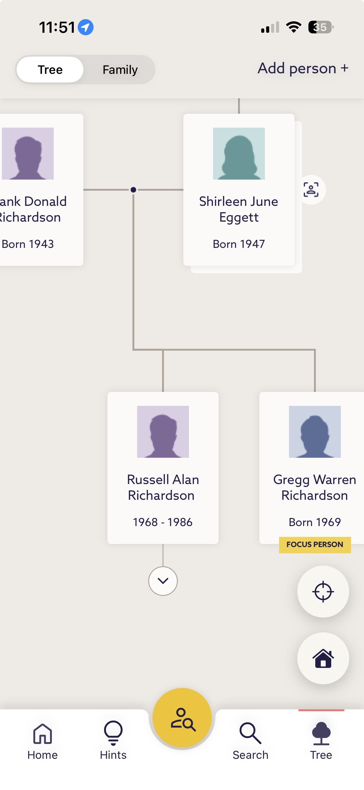

1. Market Standard
We're Behind Competitors
- ✓ Ancestry – Has sibling view in mobile pedigree
- ✓ MyHeritage – Has sibling view in mobile pedigree
- ✓ FindMyPast – Has sibling view in mobile pedigree
- ✗ FamilySearch – Requires navigation away from pedigree
This is table stakes, not innovation.
Competitor Examples

ANCESTRY

MYHERITAGE

FINDMYPAST
2. Customer Voice
What Android Users Are Saying
"I believe that the app should make sm option for providing half siblings"
"I hope they add a feature where I can see the siblings of a person in the family tree diagram."
"I find it frustrating that I don't see my siblings even though they are listed under my parents."
Note: 23 Android reviews (0.53% of reviews with text) explicitly mention sibling/family viewing over 3 years (2023-2025). iOS feedback not available for analysis.
2. Customer Voice (continued)
More User Feedback
"Love it! But please address these 3 issues: 1. Suggest the spouse's immediate family members when attaching people from records! They're often present in baptism records where both sets of grandparents are named and a sibling of one of the spouses is often a godparent..."
"website is better. search results are useless, coming up with unrelated matches that are 100 years out. doesn't show siblings, can't add. use the website"
"Why can't I add my children? It's also not allowing me to add my aunts/uncles and cousins..."
3. Proven Value
Web Users Actively Engage With This Feature
49%
of engaged users toggle siblings
(514,746 of 1,047,944 who toggled ancestors)
(514,746 of 1,047,944 who toggled ancestors)
38%
of all pedigree users toggle siblings
(593,667 users over 90 days)
(593,667 users over 90 days)
Source: Adobe Analytics, Nov 5, 2025 – Feb 2, 2026 (1.56M pedigree views)
Recommendation
Add sibling affordance to mobile pedigree view
Rationale:
- ✓ Achieves competitive parity with Ancestry, MyHeritage, FindMyPast
- ✓ Addresses explicit customer requests (3 years of Android feedback)
- ✓ Leverages proven high-engagement feature (49% of engaged users)
- ✓ Closes UX consistency gap between web and mobile
Expected Impact:
- Improved user satisfaction
- Increased mobile engagement (based on 49% web rate)
- Reduced competitive disadvantage